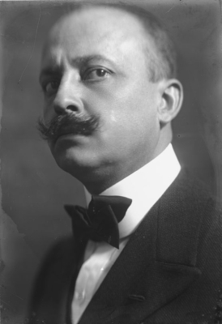

Es desde Italia donde lanzaremos al mundo este manifiesto nuestro de violencia atropelladora e incendiaria, con el cual fundamos hoy el «futurismo», porque queremos liberar este país de su fétida gangrena de profesores, de arqueólogos, de cicerones y de anticuarios.
Ya durante demasiado tiempo Italia ha sido un mercado de antiguallas. Nosotros queremos liberarla de los innumerables museos que la cubren toda de cementerios innumerables.
Filippo Tommaso Marinetti, «Le Figaro», 20 de febrero de 1909.

Manifiesto Futurista
1
Queremos cantar el amor al peligro, al hábito de la energía y a la temeridad.
2
El coraje, la audacia y la rebeldía serán elementos esenciales de nuestra poesía.
3
La pintura y el arte ha magnificado hasta hoy la inmovilidad del pensamiento, el éxtasis y el sueño, nosotros queremos exaltar el movimiento agresivo, el insomnio febril, la carrera, el salto mortal, la bofetada y el puñetazo.
4
Afirmamos que el esplendor del mundo se ha enriquecido con una belleza nueva: la belleza de la velocidad. Un coche de carreras con su capó adornado con grandes tubos parecidos a serpientes de aliento explosivo… un automóvil rugiente que parece que corre sobre la metralla es más bello que la Victoria de Samotracia.
5
Queremos alabar al hombre que tiene el volante, cuya lanza ideal atraviesa la Tierra, lanzada ella misma por el circuito de su órbita.
6
Hace falta que el poeta se prodigue con ardor, fausto y esplendor para aumentar el entusiástico fervor de los elementos primordiales.
7
No hay belleza sino en la lucha. Ninguna obra de arte sin carácter agresivo puede ser considerada una obra maestra. La pintura ha de ser concebida como un asalto violento contra las fuerzas desconocidas, para reducirlas a postrarse delante del hombre.
8
¡Estamos sobre el promontorio más elevado de los siglos! ¿Por qué deberíamos protegernos si pretendemos derribar las misteriosas puertas del Imposible? El Tiempo y el Espacio morirán mañana. Vivimos ya en lo absoluto porque ya hemos creado la eterna velocidad omnipresente.
9
Queremos glorificar la guerra – única higiene del mundo-, el militarismo, el patriotismo, el gesto destructor de los anarquistas, las ideas por las cuales se muere y el desprecio por la mujer.
10
Queremos destruir los museos, las bibliotecas, las academias variadas y combatir el moralismo, el feminismo y todas las demás cobardías oportunistas y utilitarias.
11
Cantaremos a las grandes multitudes que el trabajo agita, por el placer o por la revuelta: cantaremos a las mareas multicolores y polifónicas de las revoluciones en las capitales modernas; cantaremos al febril fervor nocturno de los arsenales y de los astilleros incendiados por violentas lunas eléctricas; a las estaciones ávidas devoradoras de serpientes que humean, en las fábricas colgadas en las nubes por los hilos de sus humaredas; en los puentes parecidos a gimnastas gigantes que salvan los ríos brillando al sol como cuchillos centelleantes; en los barcos de vapor.